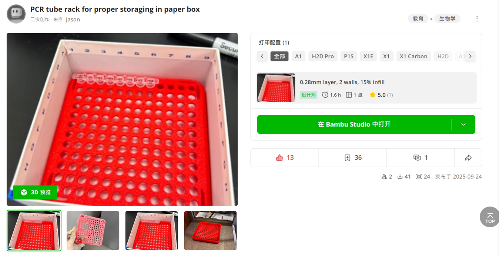
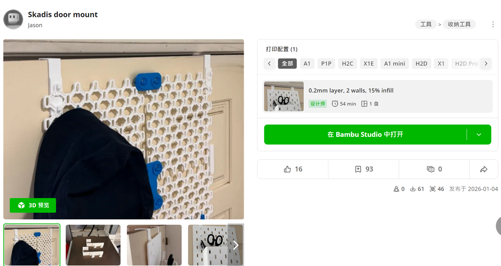
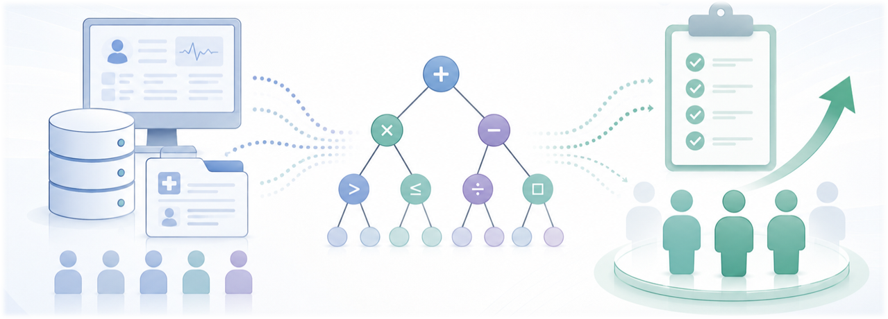
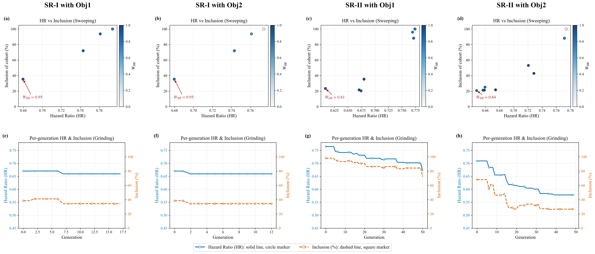
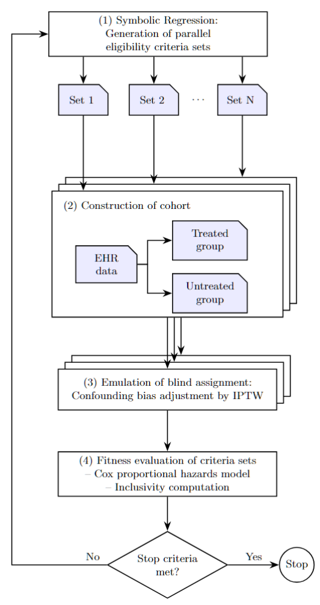
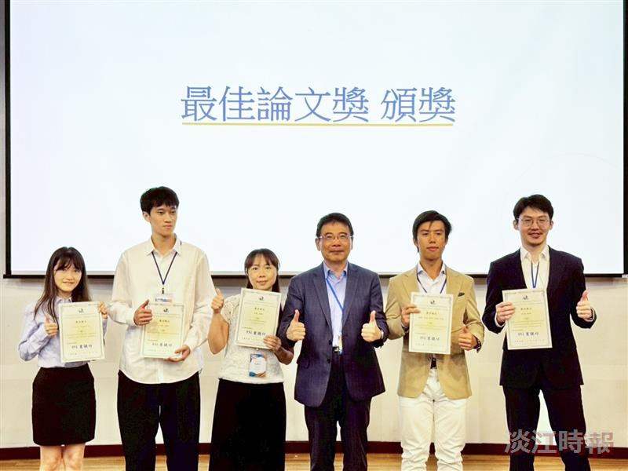
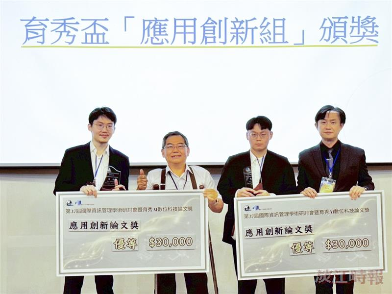

MULTI AGENTS · DATA SCIENCE · ALGORITHM ENGINEERING
Data Science × Algorithm Engineering × Multi Agents Orchestration
I have a cross-disciplinary background in life science, biotechnology research, information management, and data science. I enjoy turning real-world problems into practical projects using data, algorithms, AI, and engineering.
About · my path
Each step kept the previous one: lab questions still shape the models I build, and the models now feed back into how experiments and trials get designed.
B.S., National Yang Ming. Molecular and cell biology fundamentals.
Antibody drug programmes at Oneness Biotech: assays, cohorts, evidence.
Statistics and ML pipelines to find who actually responds to a drug.
Two master's degrees, Tamkang and CU Boulder. Modelling, databases, computing.
Symbolic regression framework, trading systems, printed hardware.
Solution engineer,
Agentic workflows, LaplaceAI platform.
Projects · things I have built
Major work and small experiments in one place. Cards get bigger when the project has more to show.
Master's thesis. An interpretable multi-objective framework that evolves eligibility criteria against real EHR data, balancing treatment effect against how many patients stay eligible.
Solution engineering at LaplaceAI: agent design, tool orchestration and analytics plumbing for client-specific problems.
MQL4 trading bot with several quantitative strategies. Modular architecture over product databases and market data APIs: signal generation, risk control, order execution.
Kaggle competition, top 25%. Transformer models for out-of-distribution marine species images, with an evaluation harness for unseen classes.
ML and statistical pipelines supporting the FB704A and FB825 clinical programmes, plus a flow cytometry assay for membrane-bound IgE+ B cells used in licensing negotiation.

A rack sized to the paper boxes tubes already ship in, so samples stay ordered in storage. Published on MakerWorld.

Hangs a pegboard on a door with no drilling. Printed, fitted, revised twice.
Industrial Development Bureau AI mentoring programme: scoping AI use cases with manufacturers and turning them into workable pipelines.
Featured project
Trial eligibility criteria decide both whether a treatment effect can be detected and who is left out. The framework searches criteria sets directly against electronic health records, then scores each one on effect and inclusivity instead of picking by hand.



Hand-written eligibility criteria trade statistical power against how representative the cohort is, with no way to see the trade-off.
Criteria sets are evolved as readable expressions over patient variables, generated in parallel rather than tuned one at a time.
Each candidate set splits the EHR population into treated and untreated groups.
Inverse probability of treatment weighting emulates blind assignment and removes confounding bias.
A Cox proportional hazards model plus an inclusivity measure score every set; the loop repeats until stop criteria are met.
Beats the existing benchmark on treatment-effect estimation while keeping cohorts more inclusive, and the criteria stay human-readable.


Best Paper, ICIM 2026 · Distinguished Award (2nd place), Y. S. Educational Foundation AI Digital Technology Thesis Award.
Li-Hsiang Chao and C.-B. Cheng. 2026 International Conference on Information Management (ICIM 2026), 16 May 2026, Taipei.
Currently building / exploring
A running log rather than a finished list. Statuses change more often than the entries do.
Rebuilding the trading loop on MT5: execution timing, state recovery after disconnects, and a cleaner strategy interface.
Local LLM-RAG workflows, graph RAG retrieval, and how far tool-using agents can be trusted with real analysis steps.
Reading into process simulation and sensor data models to see where statistical modelling helps a fab-side twin.
Other outcome models beyond Cox, multi-site EHR data, and whether the same loop transfers to observational study design.
Selected experience
Early-stage product work: designing AI agents and agentic workflows, and integrating automated workflow and analytics tooling for client solutions.
ML-based analytical pipelines for drug-responder identification. Statistical support for the FB704A and FB825 clinical projects, a flow cytometry assay developed for FB825 licensing negotiation with Leo Pharma, and patent documentation workflow.
GPA 4.0/4.0, scholarship recipient. Thesis became the featured symbolic regression project.
GPA 3.8/4.0. Statistical modelling and inference, data mining, machine learning, computer vision, robotics and autonomous systems.
Molecular and cell biology fundamentals. Foundation for understanding disease mechanisms and therapeutic biology.
Skills / tools I use
Symbolic regression · transformers & computer vision · LLMs, RAG and graph RAG · local LLM-RAG workflows · agent design
Hypothesis testing · generalized linear and additive models · survival analysis · causal weighting (IPTW) · model diagnostics
Python · R · C · SQL and relational design · Git, Docker · Azure · sequential and parallel computing · MQL4
Clinical data analysis · flow cytometry assay development · EHR cohorts · trial documentation and patent workflow
3D modelling and FDM printing · robot control, odometry, mapping and path planning
Awards / recognition
FB825 anti-CmX therapeutic antibody.
Molecular mechanisms of hypoxia-induced sonic hedgehog in differentiated cortical neurons.
Protective effects of administration of N-Acetylcysteine amide in differentiated cortical neurons.